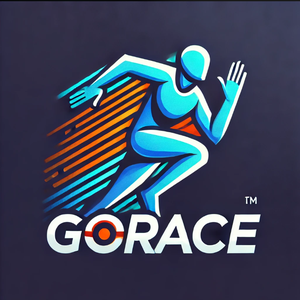
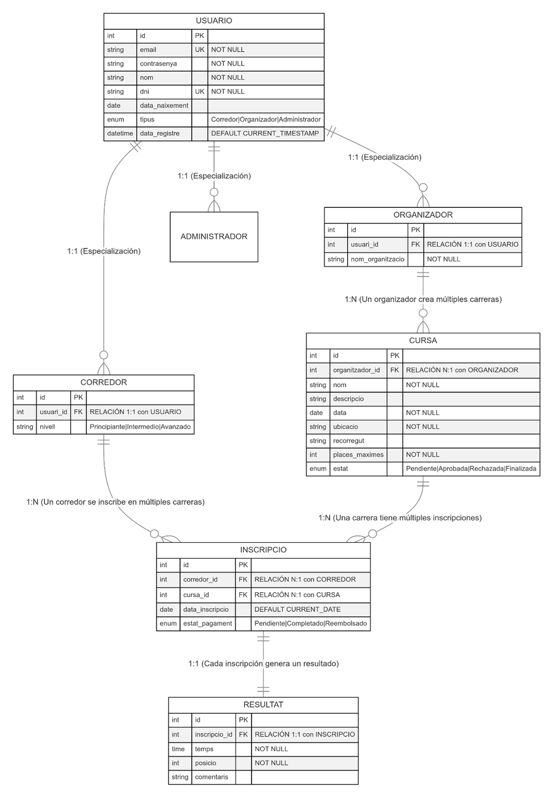
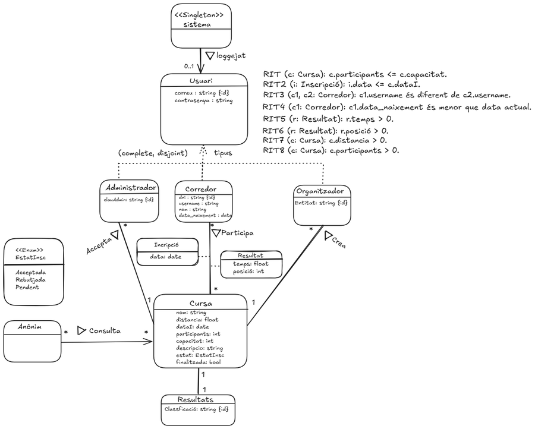

GoRace — gestión de carreras populares

Proyecto en equipo · UPC

// el proyecto
GoRace es una aplicación de escritorio para la gestión de carreras populares, desarrollada en equipo de 7 personas para la asignatura "Ampliació a l'Enginyeria del Programari" de la UPC. Permite a organizadores crear y administrar carreras, a corredores inscribirse y consultar resultados, y a administradores gestionar la plataforma.
Está construida en C++ con interfaz en Windows Forms y base de datos MySQL, siguiendo una arquitectura en tres capas (presentación, servicios y repositorios) que separa claramente la interfaz, la lógica de negocio y el acceso a datos.
El proyecto se desarrolló siguiendo la metodología ágil Scrum, a lo largo de 3 iteraciones, con gestión del backlog en Taiga, reuniones de revisión y retrospectiva al final de cada sprint.
// mi rol
Fui responsable de la fase de Incepció, definiendo junto al equipo el alcance inicial y las historias de usuario del proyecto. A lo largo de las 3 iteraciones me encargué de: el registro de corredores y organizadores (iteración 1); la interfaz y la lógica para eliminar usuarios (iteración 2); y en la iteración final, la implementación del mapa interactivo con el punto de inicio, el punto final y el recorrido de cada carrera, la eliminación de corredores desde el perfil de organizador y de usuarios desde el perfil de administrador, la corrección de varios errores detectados en las pruebas, la unificación de la página principal con las pantallas de login y registro, y la preparación de la presentación final del proyecto.
// enlaces
Puedes revisar el código del proyecto en el repositorio: